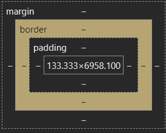

A Blog for Sam
Padding, Margins, and Borders.
Whats the Difference?
14/06/24
Kia ora!
Borders, Margins and Padding these are things found in a book, on A4 writing paper from school. All physical frames for work to be stuck inside of, But they are also key elements of HTML and CSS, boxing in your important contents!
Here's a visual guide of what the box looks like:

just like when you have to keep inside they lines when drawing, These three elements are key properties of style within HTML and CSS that help to keep your content secure. Lets work from the inside out.

Content: This is the good stuff, the innermost part, everything that you have worked on and want to showcase to the world. We want to make sure that the user is able to see and access this hard work when they use your HTML page.
Padding: This Element is the inner space between your beautiful Content and the next stage with in the box, your border. Padding can be used to adjust the sizes of boxes to give yourself more room to work with and to let that content to let it shine! 
Border: This Element is the perimeter of your box. They can be hidden, invisible not even making a peep on your screen. Or they can be a thick bold line that stands out and makes itself know! This is a great tool to show the outline of your box!
Margin: this Element is the space outside the box, everything that isn't within the border. You can use Margins in CSS to center elements (like your box that you have created) by changing the values of the surrounding space you can move it to suit your needs and have it work around your desired design.
However Beware Margin Collapse, This often occurs when you have to items stack on top of each other the larger of the two margins will be shown and the smaller margin will collapse and treated as if it where set to zero.
These Elements all work to help you design and create with HTML and CSS. Figuring out what to edit and what to move around is all part of the fun of creating. So I hope this helps you to understand the Difference and go on to enjoy the process!